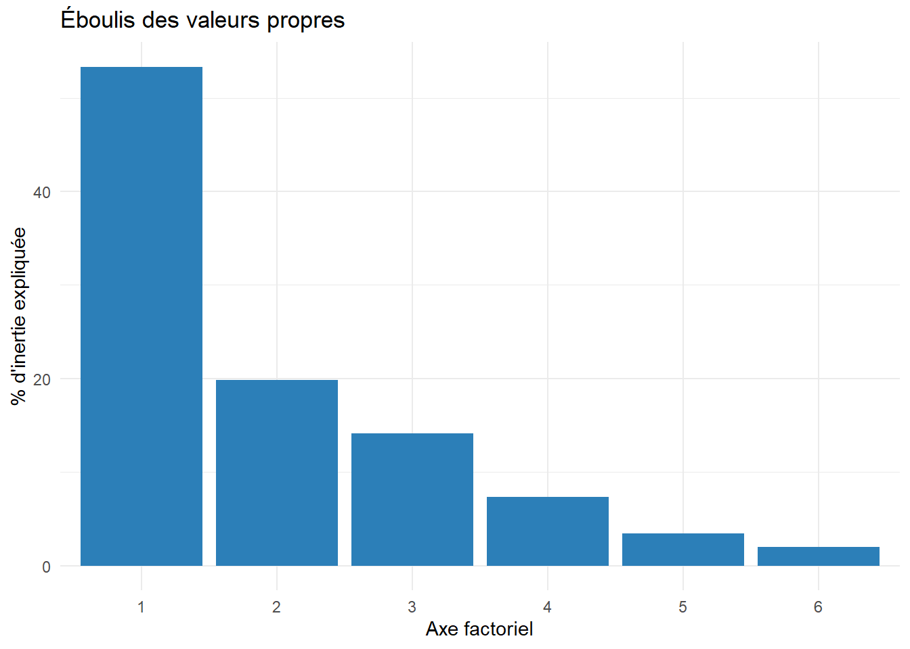
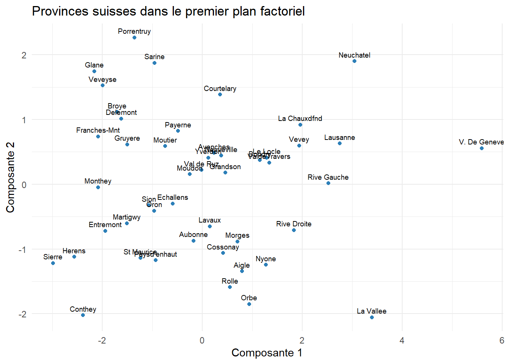

| Pays | PIB | Chomage | Inflation | Dette | Gini |
|---|---|---|---|---|---|
| France | 52890 | 7.6 | 1.5 | 112 | 30.0 |
| Allemagne | 65300 | 5.9 | 1.9 | 63 | 29.5 |
| États-Unis | 86000 | 4.2 | 2.9 | 124 | 41.8 |
| Japon | 34000 | 2.5 | 2.5 | 206 | 32.9 |
| Brésil | 10500 | 7.0 | 4.5 | 87 | 52.0 |
| Norvège | 95000 | 3.5 | 3.0 | 29 | 27.7 |
Analyse en Composantes Principales (ACP)
statistiques
analyse de données
ACP
Cours complet sur l’ACP : nuage de points pesants, inertie, théorème de Huygens, résolution du problème, indicateurs de qualité, exemple appliqué en R.
Pourquoi l’ACP est une idée intéressante ?
Prenons un jeu de données décrivant plusieurs pays selon leur PIB par habitant, leur taux de chômage, l’inflation, la dette publique et l’indice de Gini. Les données sont en 5 dimensions, et nous ne sommes capables d’en visualiser que 3 au mieux. Comment, dans ce cas, identifier des tendances ou des groupes ?
C’est précisément le problème que l’ACP se propose de résoudre.
1. Introduction des concepts utiles
Avant de commencer à introduire les concepts, il est important de savoir ce qu’on cherche à faire quand on fait une ACP. L’ACP prend un nuage de points en \(N\) dimensions et le projette sur les \(p\) dimensions (N > p) qui “résument” le plus d’informations possibles. Que veut dire “résume”? Comment trouver ces dimensions et effectuer la projection? C’est l’objet de ce cours.
Note de l’auteur Quand j’ai étudié l’ACP pour la première fois, l’idée de l’ACP et ce vers quoi tendent toutes ces maths n’était malheureusement mentionnée que très tardivement dans le cours, ce qui a fait d’un cours qui est en tout point passionant, un des pires souvenirs de mon école d’ingénieur. Ce cours est une tentative de faire le cours que j’aurais aimé avoir à l’époque. J’espère qu’il aidera, et à défaut il est un bon rappel pour moi de tout le chemin parcouru depuis.
Nous commençons donc avec un jeu de données quelconque. Formellement un jeu de données est composé d’un nuage de points pesant et d’une métrique.
ImportantDéfinition 1 - Nuage de points pesants
On appelle nuage de points pesants un ensemble \((x_{1}, \dots, x_{n})\) de \(n\) points de \(\mathbb{R}^p\) où chaque observation \(x_{i}\) est décrite par \(p\) variables continues et est munie d’un poids \(p_{i} > 0\) avec \(\sum_{i=1}^n p_i =1\). Le nuage de points pesants \(N\) est
\[N = \{(x_{i}, p_{i}): i =1,...,n\}\]
Avec :
- \(x_i \in \mathbb{R}^p\) : une observation décrite par \(p\) variables
- \(p_i > 0\) : le poids de l’observation \(i\), avec \(\sum_{i=1}^n p_i = 1\)
Pourquoi mettre des poids sur les observations ?
Il est courant en statistique de vouloir pondérer ses observations pour mieux refléter la réalité statistique du monde. Par exemple, si l’on relève 2 observations pour un secteur économique qui représente 60% de l’activité d’une région et 7 observations pour un secteur qui représente 10% de l’activité économique de cette même région. Il est alors naturel de vouloir surpondérer les premières observations et sous-pondérer les deuxièmes quand l’on souhaite produire des mesures de l’activité économique de cette région. C’est là le rôle du poids de nos observations.
Les matrices \(D\) et \(X\)
Pour décrire un nuage de points pesants, on utilise les deux matrices suivantes:
- \(D \in \mathbb{R}^{n \times n}\) est la matrice décrivant les poids des observations. D est une matrice diagonale telle que l’élément (i,j) est
\[D_{ij} = \begin{cases} p_i & \text{si } i=j, \\ 0 & \text{sinon} \end{cases}\]
- \(X \in \mathbb{R}^{n \times p}\) est la matrice décrivant les \(n\) observations par \(p\) variables continues, telle que l’élément \((i,j)\) est la variable \(j\) pour l’observation \(i\).
Exemple \(D\) est la matrice diagonale \(n \times n\) des poids, et \(X\) la matrice \(n \times p\) des données
\[D = \begin{bmatrix} 0.4 & 0 & 0 \\ 0 & 0.3 & 0 \\ 0 & 0 & 0.3 \end{bmatrix} \qquad X = \begin{bmatrix} 2 & 3 \\ 1 & 5 \\ 4 & 2 \end{bmatrix}\]
On a maintenant un nuage de points (des observations) et une pondération. Mais en analyse de données, les données sont définies par le triplet (X, D, M)
ImportantDéfinition 2 - Le triplet \((X, D, M)\)
- \(X\) : matrice des données (\(n \times p\))
- \(D\) : matrice de poids (diagonale, \(\sum p_i = 1\))
- \(M\) : métrique : matrice \(p \times p\), symétrique définie positive, qui définit les distances entre observations
Il nous faut donc rajouter une métrique pour avoir une notion de distance valable dans plusieurs dimensions.
C’est quoi une métrique ?
Quand on a p variables (disons: PIB, chômage, inflation), et nous voulons mesurer la distance entre les deux individus \(x_{i}\) et \(x_{j}\). La formule générale de distance est:
\[d_{M}^2(x_{i}, x_{j}) = (x_{i} - x_{j})^\top M (x_{i}-x_{j})\]
Le choix de M (la métrique) change complètement la notion de “distance”.
Cas 1: \(M = I_{p}\) (métrique euclidienne) Ici, chaque variable contribue à la distance avec le même poids. SAUF QUE, si une variable a une échelle plus grande qu’une autre (par exemple le PIB en dizaine de milliers de millions et l’inflation, en point de pourcentage), elle va écraser les autres dans le calcul de la distance. Une petite variation de PIB pèse beaucoup plus qu’une grosse variation d’inflation, simplement parce que l’échelle numérique est plus grande, pas parce que c’est réellement plus important. C’est la raison pour laquelle on utilise la métrique normalisée
Cas 2: \(M = \text{diag}(1/s_1^2, \dots, 1/s_p^2)\) (métrique normalisée) \ Pour corriger ce problème, on prend:
\[M = diag(\frac{1}{s_{1}^2}, ..., \frac{1}{s_{p}^2})\]
où \(s_{j}^2\) est la variance empirique de la variable j.
Concrètement, cela revient à diviser chaque écart \(x_{i} - x_{j}\) par \(s_{j}^2\) avant de le mettre au carré. Une variable très dispersée (grande variance comme le PIB) est “rétrécie”, une variable peu dispersée (comme l’inflation) est “dilatée”.\
Remarque : c’est ce que fait la fonction scale() en R.
NoteExemple : effet de la normalisation
Prenons 3 individus décrits par 2 variables (PIB, chômage) :
\[X = \begin{bmatrix} 50000 & 7 \\ 30000 & 5 \\ 80000 & 3 \end{bmatrix}\]
On compare l’individu 1 \((50000, 7)\) et l’individu 2 \((30000, 5)\), d’écart \(x_1 - x_2 = (20000,\ 2)\).
Variances empiriques : \[s_{\text{PIB}}^2 \approx 422\,222\,222 \qquad s_{\text{chômage}}^2 \approx 2{,}667\]
Sans normalisation (\(M = I_p\)) : \[d^2 = 20000^2 + 2^2 = 400\,000\,000 + 4 = 400\,000\,004\] La contribution du chômage (4) est totalement écrasée par celle du PIB (400 000 000), alors qu’une différence de 2 points de chômage est loin d’être négligeable économiquement.
Avec normalisation (\(M = \text{diag}(1/s_{\text{PIB}}^2,\ 1/s_{\text{chômage}}^2)\)) : \[d^2 = \frac{20000^2}{422\,222\,222} + \frac{2^2}{2{,}667} = 0{,}947 + 1{,}500 = 2{,}447\] Les deux variables contribuent maintenant dans un ordre de grandeur comparable.
Propriété clé : les distances calculées sur les données brutes avec la métrique \(D_{1/s}\) sont identiques aux distances calculées sur les données réduites (centrées-réduites) avec la métrique identité. Normaliser une variable ou changer de métrique, c’est donc la même opération.
\[d_{D_{1/s^2}}^2(x_{1}, x_{2}) = (x_{1} - x_{2})^\top D_{1/s^2}(x_{1}-x_{2}) \\ = [D_{1/s}(x_{1}-x_{2})]^\top[D_{1/s}(x_{1}-x_{2})] \\ = (x_{1}^* - x_{2}^*)^\top(x_{1}^*-x_{2}^*) \\ = d_{I_{p}^2}(x_{1}^*, x_{2}^*)\]
1.1. Inertie
Maintenant qu’on a une notion de distance, on peut s’intéresser à l’inertie de notre nuage. L’inertie du nuage par rapport à un point est la mesure de la dispersion du nuage autour de ce point.
ImportantDéfinition 3 — Inertie par rapport à un point
L’inertie de \(N\) par rapport à un point \(a \in \mathbb{R}^p\) est
\[I_a = \sum_{i=1}^n p_i\, d_M^2(a, x_i)\]
Quel point minimise l’inertie ?
Une question naturelle se pose : parmi tous les points \(a \in \mathbb{R}^p\), lequel rend la dispersion du nuage \(I_a\) la plus petite possible (en somme, le point le plus central du nuage) ? En développant \(I_a\) comme fonction de \(a\) :
\[I_a = \sum_{i=1}^n p_i (x_i - a)^\top M (x_i - a)\]
et en dérivant par rapport à \(a\) (avec \(M\) symétrique) :
\[\frac{\partial I_a}{\partial a} = -2 \sum_{i=1}^n p_i\, M(x_i - a)\]
On annule cette dérivée :
\[\sum_{i=1}^n p_i\, M(x_i - a) = 0 \quad\Longleftrightarrow\quad M\left(\sum_{i=1}^n p_i x_i - a\right) = 0\]
Comme \(M\) est symétrique définie positive (donc inversible), on obtient
\[a = \sum_{i=1}^n p_i x_i\]
Ce point particulier et indépendant du choix de la métrique \(M\), est celui qui minimise l’inertie. C’est précisément le centre de gravité du nuage.
ImportantDéfinition 4 — Centre de gravité
Le centre de gravité du nuage \(N\), noté \(g\), est un vecteur de \(\mathbb{R}^p\) donné par la relation
\[g = \sum_{i=1}^n p_i x_i = (g_1, \dots, g_p)^\top\]
Le nuage centré est alors la matrice dont l’élément \((i,j)\) est \(x_{ij} - g_j\).
L’inertie de \(N\) par rapport au centre de gravité \(g\) joue un rôle essentiel dans les méthodes factorielles. On la note
\[I := I_g = \sum_{i=1}^n p_i\, d_M^2(g, x_i)\]
Maintenant qu’on sait que \(I_{g}\) est l’inertie minimale du nuage de points, le théorème suivant paraît naturel.
Théorème de Huygens (par rapport à un point)
TipThéorème 1 — Huygens par rapport à un point
\[\forall a \in \mathbb{R}^p, \qquad I_a = I_g + d_M^2(a, g)\]
Preuve. Pour tout \(a \in \mathbb{R}^p\), on décompose \(x_i - a = (x_i - g) + (g - a)\) :
\[I_a = \sum_{i=1}^n p_i \big[(x_i-g) + (g-a)\big]^\top M \big[(x_i-g) + (g-a)\big]\]
En développant ce produit :
\[I_a = \underbrace{\sum_{i=1}^n p_i (x_i-g)^\top M (x_i-g)}_{=\ I_g} + 2(g-a)^\top M \underbrace{\sum_{i=1}^n p_i (x_i - g)}_{=\ 0} + \underbrace{\sum_{i=1}^n p_i}_{=\ 1} (g-a)^\top M (g-a)\]
Le terme croisé s’annule car \(\sum_i p_i (x_i - g) = \sum_i p_i x_i - g \sum_i p_i = g - g = 0\) (en utilisant \(\sum_i p_i = 1\) et la définition de \(g\)). Il reste :
\[I_a = I_g + (g-a)^\top M (g-a) = I_g + d_M^2(a, g)\]
\(\blacksquare\)
Comme \(d_M^2(a,g) \geq 0\) pour tout \(a\), ce théorème confirme directement le résultat de la section précédente :
\(I_a \geq I_g\), avec égalité si et seulement si \(a = g\). Le centre de gravité est donc bien l’unique point qui minimise l’inertie.
Inertie par rapport à un sous-espace affine
On vient de voir que le centre de gravité \(g\) est le point qui minimise l’inertie du nuage. Mais s’arrêter à un point ne nous avance pas beaucoup : projeter toutes nos observations sur un seul point \(g\) revient à effacer complètement l’information qui nous intéresse, à savoir la façon dont les observations varient les unes par rapport aux autres. Un point n’a pas de direction, pas d’étendue : il ne peut rien nous apprendre sur la structure du nuage.
Ce qui est réellement utile, en revanche, c’est de projeter le nuage sur un sous-espace de dimension plus grande qu’un simple point, une droite ou un plan par exemple, car cela permet de préserver une partie de la variabilité des données tout en la représentant dans un espace plus simple. Le problème change donc de nature : il ne s’agit plus de trouver le meilleur point pour résumer le nuage, mais de trouver le meilleur sous-espace. Et comme un point n’est jamais qu’un sous-espace affine de dimension 0, il est naturel de se demander si le résultat obtenu pour un point (le fait que \(g\) minimise l’inertie) se généralise à des sous-espaces de dimension quelconque. C’est précisément ce que va établir la version du théorème de Huygens pour un sous-espace affine.
ImportantDéfinition 5 — Inertie par rapport à un sous-espace affine
L’inertie de \(N\) par rapport à un sous-espace affine \(F\) est
\[I_F = \sum_{i=1}^n p_i\, d_M^2(F, x_i)\]
Ici, \(d_M^2(F, x_i)\) mesure la distance entre l’observation \(x_i\) et sa projection sur \(F\) : c’est l’information qu’on perd en résumant \(x_i\) par sa version projetée sur \(F\). L’inertie \(I_F\) additionne ces pertes sur toutes les observations, pondérées par leur poids \(p_i\), c’est donc une mesure globale de la perte d’information quand on remplace le nuage \(N\) par sa projection sur \(F\).
C’est ce point qui est essentiel pour la suite : si on cherche maintenant à minimiser \(I_F\), ce n’est pas un choix arbitraire ou un exercice mathématique gratuit. C’est précisément parce que \(I_F\) mesure la perte d’information causée par la projection sur \(F\) que la minimiser revient à choisir, parmi tous les sous-espaces possibles, celui qui déforme le moins les données originales. Autrement dit, on commence ici à formuler le véritable problème de l’ACP : trouver le sous-espace qui capture le mieux le nuage \(N\), ce qui, traduit mathématiquement, signifie trouver le sous-espace qui minimise l’inertie perdue \(I_F\).
Le théorème de Huygens pour un sous-espace affine généralise celui vu pour un point : il montre que, parmi tous les sous-espaces affines parallèles à une direction donnée, celui qui passe par le centre de gravité \(g\) est celui qui minimise l’inertie perdue.
TipThéorème 2 — Huygens par rapport à un sous-espace affine
Pour tout sous-espace affine \(F\) de \(\mathbb{R}^p\) :
\[I_F = I_{F_g} + d_M^2(a, g)\]
où \(F_g\) est le sous-espace affine parallèle à \(F\) passant par \(g\), et \(a\) est la projection \(M\)-orthogonale de \(g\) sur \(F\).
Comment lire ce théorème. Il dit que l’inertie totale \(I_F\) se décompose en deux morceaux :
- \(I_{F_g}\) : l’inertie “intrinsèque”, celle qu’on aurait de toute façon avec la meilleure version possible de ce sous-espace (celle qui passe par \(g\)), c’est la partie qu’on ne peut pas réduire.
- \(d_M^2(a, g)\) : un terme qui dépend uniquement de où se situe \(F\) par rapport à \(g\) : plus \(F\) est loin du centre de gravité, plus ce terme est grand.
Pourquoi c’est important.
Comme \(d_M^2(a,g) \geq 0\), on a toujours \(I_F \geq I_{F_g}\), avec égalité si et seulement si \(F\) passe par \(g\) (c’est-à-dire \(F = F_g\)). Ainsi, le sous-espace affine parallèle à \(F\) d’inertie minimale est \(F_g\), celui qui passe par le centre de gravité.
L’ACP, comme on l’expliquera plus loin, est une méthode qui cherche le “meilleur” sous espace dans lequel projeter des données en gardant l’essentiel de l’information. Ce résultat, c’est exactement le résultat dont l’ACP a besoin : au lieu de chercher, pour chaque direction possible, le meilleur sous-espace parmi tous les sous-espaces affines parallèles à cette direction (une infinité de candidats), on sait déjà que le meilleur passe forcément par \(g\). Le problème se réduit donc à chercher uniquement la bonne direction, ce qui déplace le problème des sous-espaces affines ou sous-espaces vectoriels.
Preuve du Théorème 1.2.2.
Cette preuve reprend le même schéma que celle du théorème de Huygens par rapport à un point : on décompose, on développe un carré, et un terme croisé s’annule grâce à une propriété du centre de gravité. La différence, ici, est qu’on travaille avec des résidus vectoriels par rapport à un sous-espace plutôt qu’avec de simples différences de points.
Pour chaque observation \(x_i\), on la décompose de deux façons. Par rapport à \(F\), on écrit \(x_i = x_{i1} + x_{i2}\), où \(x_{i1} \in F\) est la projection de \(x_i\) sur \(F\) et \(x_{i2} \in F^\perp\) le résidu orthogonal, c’est-à-dire ce qui reste après avoir projeté \(x_i\) sur \(F\). Par rapport à \(F_g\), on écrit de la même manière \(x_i = \tilde x_{i1} + \tilde x_{i2}\) avec \(\tilde x_{i1} \in F_g\) et \(\tilde x_{i2} \in F_g^\perp\).
Comme \(F_g\) est le sous-espace parallèle à \(F\) passant par \(g\), les deux sous-espaces ont la même direction, donc le même espace orthogonal : \(F^\perp = F_g^\perp\). Il en résulte que le vecteur \(b = x_{i2} - \tilde x_{i2}\) ne dépend pas de \(i\), mais est un unique vecteur fixe pour toutes les observations. Intuitivement, translater un sous-espace affine d’un vecteur fixe translate le résidu orthogonal de chaque point de ce même vecteur fixe, quelle que soit l’observation considérée.
On utilise maintenant la définition du centre de gravité pour identifier ce vecteur \(b\). En injectant la décomposition par rapport à \(F_g\) dans \(g = \sum_{i=1}^n p_i x_i\), on obtient
\[g = \sum_{i=1}^n p_i \tilde x_{i1} + \sum_{i=1}^n p_i (x_{i2} - b).\]
Or \(g\) appartient à \(F_g\) par construction, et \(\sum_{i=1}^n p_i \tilde x_{i1}\) appartient également à \(F_g\), puisqu’une moyenne pondérée de points d’un sous-espace affine reste dans ce sous-espace dès lors que les poids somment à 1. En soustrayant, le second terme \(\sum_{i=1}^n p_i(x_{i2}-b)\) doit donc appartenir à la direction de \(F_g\). Mais chaque terme \(x_{i2}-b\) appartient à \(F^\perp\), donc leur somme pondérée aussi. Un vecteur appartenant à la fois à la direction de \(F_g\) et à son orthogonal ne peut être que le vecteur nul, d’où
\[\sum_{i=1}^n p_i(x_{i2}-b) = 0.\]
Cette égalité entraîne deux conséquences essentielles pour la suite de la preuve. D’une part, \(b = \sum_{i=1}^n p_i x_{i2}\), puisque \(\sum_{i=1}^n p_i = 1\). D’autre part, le point \(a := \sum_{i=1}^n p_i \tilde x_{i1}\) s’identifie précisément à la projection \(M\)-orthogonale de \(g\) sur \(F\).
On peut à présent calculer \(I_F\) à partir de sa définition, en développant complètement le carré. Comme la distance de \(x_i\) à \(F\) est exactement la norme de son résidu orthogonal \(x_{i2}\), on a
\[ \begin{aligned} I_F &= \sum_{i=1}^n p_i\, d_M^2(F, x_i) \\ &= \sum_{i=1}^n p_i \|x_{i2}\|_M^2 \\ &= \sum_{i=1}^n p_i (x_{i2} - b + b)^\top M (x_{i2} - b + b) \\ &= \sum_{i=1}^n p_i (x_{i2}-b)^\top M (x_{i2}-b) + \sum_{i=1}^n p_i\, b^\top M b + 2\sum_{i=1}^n p_i (x_{i2}-b)^\top M b \\ &= \sum_{i=1}^n p_i\, \tilde x_{i2}^\top M \tilde x_{i2} + \sum_{i=1}^n p_i (g-a)^\top M (g-a) + 2\sum_{i=1}^n p_i (x_{i2}-b)^\top M b \end{aligned} \]
La preuve se termine en remarquant les trois faits suivants. D’abord, \(I_{F_g} = \sum_{i=1}^n p_i\, \tilde x_{i2}^\top M \tilde x_{i2}\), ce terme étant par définition l’inertie du nuage par rapport à \(F_g\). Ensuite, \(d_M^2(a,g) = \sum_{i=1}^n p_i (g-a)^\top M (g-a)\), puisque \(b = g - a\) et que ce terme ne dépend pas de \(i\). Enfin, \(\sum_{i=1}^n p_i (x_{i2}-b)^\top M b = 0\), car \(b = \sum_{i=1}^n p_i x_{i2}\), ce qui annule exactement le terme croisé.
On obtient donc
\[I_F = I_{F_g} + d_M^2(a,g),\]
ce qui achève la preuve. \(\blacksquare\)
Le théorème de Huygens nous a beaucoup aidé, maintenant on connait la position de notre plan : \(g\). Mais il nous reste un problème d’importance, la direction. Comment évaluer si une direction E est bonne? Le critère de l’ACP est de minimiser l’inertie perdue. Le problème, c’est que cette quantité est difficile à manipuler. C’est là qu’intervient notre premier lemme.
Soit \(E\) un sous-espace vectoriel de \(\mathbb{R}^p\) tel que \(\mathbb{R}^p = E \oplus E^\perp\), on a
\[I = I_E + I_{E^\perp}.\]
Preuve du Lemme 1.2.1.
Pour tout point \(x_i \in \mathbb{R}^p\), on peut écrire \(x_i = x_{i1} + x_{i2}\), où \(x_{i1} \in E\) et \(x_{i2} \in E^\perp\), cette décomposition étant unique puisque \(\mathbb{R}^p = E \oplus E^\perp\).
En partant de la définition de l’inertie totale et en développant complètement le carré, on obtient
\[ \begin{aligned} I &= \sum_{i=1}^n p_i\, d_M^2(x_i, g) \\ &= \sum_{i=1}^n p_i (x_i - g)^\top M (x_i - g) \\ &= \sum_{i=1}^n p_i (x_{i1} + x_{i2} - g)^\top M (x_{i1} + x_{i2} - g) \\ &= \sum_{i=1}^n p_i\, x_{i1}^\top M x_{i1} + \sum_{i=1}^n p_i\, x_{i2}^\top M x_{i2} + 2\sum_{i=1}^n p_i\, x_{i2}^\top M x_{i1} - 2\sum_{i=1}^n p_i (x_{i1}+x_{i2})^\top M g + g^\top M g \end{aligned} \]
La preuve se termine en observant deux faits. D’une part, \(x_{i1}^\top M x_{i2} = 0\) pour tout \(i\), puisque \(x_{i1} \in E\) et \(x_{i2} \in E^\perp\), ce qui annule le terme croisé \(2\sum_{i=1}^n p_i\, x_{i2}^\top M x_{i1}\). D’autre part, en travaillant sur le nuage centré, on a \(g = 0\), ce qui annule à la fois le terme \(-2\sum_{i=1}^n p_i (x_{i1}+x_{i2})^\top M g\) et le terme \(g^\top M g\).
Il reste donc
\[I = \sum_{i=1}^n p_i\, x_{i1}^\top M x_{i1} + \sum_{i=1}^n p_i\, x_{i2}^\top M x_{i2} = I_E + I_{E^\perp}.\]
\(\blacksquare\)
Soit \(V = X^\top D X = \sum_{i=1}^n p_i x_i x_i^\top\) la matrice de variances-covariances. On a l’expression matricielle suivante de l’inertie totale :
\[I = \text{tr}(VM).\]
Preuve du Lemme 1.2.2.
En rappelant que \(g = 0\) (le nuage étant centré), on part de la définition de l’inertie totale et on utilise le fait qu’un scalaire est égal à sa propre trace :
\[ \begin{aligned} I &= \sum_{i=1}^n p_i\, d_M^2(0, x_i) \\ &= \sum_{i=1}^n p_i\, x_i^\top M x_i \\ &= \text{tr}\left(\sum_{i=1}^n p_i\, x_i^\top M x_i\right) \end{aligned} \]
Par la propriété de commutativité cyclique de la trace, on peut réécrire chaque terme \(x_i^\top M x_i\) sous la forme \(M x_i x_i^\top\) à l’intérieur de la trace, c’est-à-dire \(\text{tr}\left(\sum_{i=1}^n p_i\, x_i^\top M x_i\right) = \text{tr}\left(\sum_{i=1}^n p_i\, M x_i x_i^\top\right)\). En sortant \(M\) de la somme, puisqu’il ne dépend pas de \(i\), on obtient
\[ \begin{aligned} I &= \text{tr}\left(\sum_{i=1}^n p_i\, M x_i x_i^\top\right) \\ &= \text{tr}\left(M \sum_{i=1}^n p_i\, x_i x_i^\top\right) \\ &= \text{tr}(MV) \\ &= \text{tr}(VM) \end{aligned} \]
la dernière égalité découlant à nouveau de la commutativité cyclique de la trace, \(\text{tr}(MV) = \text{tr}(VM)\). \(\blacksquare\)
L’inertie totale étant reliée à la matrice de variances-covariances (voir Lemme 1.2.2), on s’intéresse maintenant au lien entre cette matrice et l’inertie expliquée par un axe.
Soit \(\Delta_u\) un axe passant par \(g = 0\) de vecteur unitaire \(u\). On a
\[I_{\Delta_u^\perp} = u^\top M V M u.\]
Preuve du Lemme 1.2.3.
Par la définition 1.2.2, on a
\[I_{\Delta_u^\perp} = \sum_{i=1}^n p_i\, d_M^2(x_i, \Delta_u^\perp).\]
Soit \(v \in \Delta_u\) et \(\alpha\) l’angle entre \(v\) et \(x_i\), on a
\[\cos(\alpha) = \frac{x_i^\top M v}{\|x_i\|_M \|v\|_M}.\]
Ainsi,
\[ \begin{aligned} d_M^2(x_i, \Delta_u^\perp) &= \cos^2(\alpha)\, \|x_i\|_M^2 \\ &= \frac{(x_i^\top M v)^2}{\|v\|_M^2} \\ &= \left(\frac{x_i^\top M v}{\|v\|_M}\right)^2 \end{aligned} \]
En considérant le vecteur unitaire \(u = \dfrac{v}{\|v\|_M}\), on a
\[d_M^2(x_i, \Delta_u^\perp) = (x_i^\top M u)^2.\]
Ainsi,
\[ \begin{aligned} I_{\Delta_u^\perp} &= \sum_{i=1}^n p_i (x_i^\top M u)^2 \\ &= \sum_{i=1}^n p_i\, u^\top M x_i x_i^\top M u \\ &= u^\top M \left(\sum_{i=1}^n p_i x_i x_i^\top\right) M u \\ &= u^\top M V M u. \end{aligned} \]
\(\blacksquare\)
3. Principe de l’ACP
Formulation du problème
L’ACP cherche une représentation approchée du nuage \(N \subset \mathbb{R}^p\) dans un sous-espace de dimension réduite \(k < p\).
On cherche \(E_k\), sous-espace de dimension \(k\), qui minimise l’inertie perdue \(I_{E_k^\perp}\) — ce qui équivaut, l’inertie totale étant fixe, à maximiser l’inertie expliquée \(I_{E_k}\). Formellement, \(E_k\) est optimal s’il maximise l’inertie expliquée parmi tous les sous-espaces de dimension \(k\).
Construction séquentielle
Deux lemmes permettent de construire les axes un à un :
- Lemme d’inclusion : le sous-espace optimal de dimension \(k\) contient le sous-espace optimal de dimension \(k-1\)
- Lemme de construction : chercher \(E_k\) optimal \(\supseteq E_{k-1}\) revient à chercher une droite \(\Delta u_k\), \(M\)-orthogonale à \(E_{k-1}\), qui minimise \(I_{\Delta u_k}\)
On peut ainsi construire les axes un par un, par ordre d’importance.
4. Résolution du problème
Recherche du premier axe
On cherche \(u_1\) unitaire (\(u_1^\top M u_1 = 1\)) qui maximise l’inertie expliquée : \[u_1 = \arg\max_u\ u^\top MVMu \quad \text{s.c.}\quad u^\top Mu = 1\]
Par les multiplicateurs de Lagrange, on obtient : \[MVMu_1 - \lambda_1 Mu_1 = 0 \quad\Longleftrightarrow\quad VMu_1 = \lambda_1 u_1\]
\(u_1\) est donc un vecteur propre de \(VM\), associé à sa plus grande valeur propre \(\lambda_1\). L’inertie expliquée par cet axe vaut \(\lambda_1\).
Généralisation : les axes factoriels
Les axes \(\Delta u_1, \dots, \Delta u_p\) sont les axes factoriels :
- \(u_k\) = vecteur propre de \(VM = X^\top D X M\) associé à la \(k\)-ème plus grande valeur propre \(\lambda_k\)
- L’inertie expliquée par \(\Delta u_k\) vaut \(\lambda_k\), et \(I = \sum_{k=1}^p \lambda_k\)
- Le % d’inertie expliqué par \(E_k\) est \(\dfrac{100 \cdot (\lambda_1 + \dots + \lambda_k)}{I}\)
Si \(r = \text{rang}(X)\), alors \(\lambda_1, \dots, \lambda_r > 0\) et \(\lambda_{r+1} = \dots = \lambda_p = 0\).
5. Composantes principales & indicateurs
Composantes principales
La \(k\)-ème composante principale \(C_k = XMu_k\) donne les coordonnées des \(n\) observations sur l’axe \(\Delta u_k\).
Propriétés : les \(C_k\) sont centrées, de variance \(\lambda_k\), et non corrélées entre elles.
Formule de reconstitution — avec \(s < r\) composantes : \[X \approx \tilde X = \sum_{k=1}^s C_k u_k^\top\]
Indicateurs de qualité
Qualité de représentation d’une observation sur l’axe \(k\) : \[\cos^2(i,k) = \left(\frac{c_{ik}}{\|x_i\|_M}\right)^2\]
Contribution d’une observation à la construction de l’axe \(k\) (repère les observations atypiques) : \[\text{ctr}(i,k) = \frac{p_i c_{ik}^2}{\lambda_k}\]
Représentation des variables
On peut projeter les variables initiales sur les axes factoriels et calculer leur corrélation avec chaque composante : \[\text{cor}(j,k) = \frac{d_{kj}}{\|X_j\|_D} \in [-1, 1]\]
Ces corrélations se visualisent sur le cercle des corrélations.
L’ACP en pratique
- Description des données
- Statistiques descriptives univariées et bivariées
- Choix des éléments actifs et de la métrique
- Choix du nombre d’axes (% d’inertie expliquée)
- Interprétation des axes (sens, observations bien représentées, atypiques)
- Conclusion
6. Exemple appliqué en R
Le jeu de données swiss
Indicateurs socio-économiques et de fécondité pour 47 provinces francophones de Suisse (1888) — inclus nativement dans R.
'data.frame': 47 obs. of 6 variables:
$ Fertility : num 80.2 83.1 92.5 85.8 76.9 76.1 83.8 92.4 82.4 82.9 ...
$ Agriculture : num 17 45.1 39.7 36.5 43.5 35.3 70.2 67.8 53.3 45.2 ...
$ Examination : int 15 6 5 12 17 9 16 14 12 16 ...
$ Education : int 12 9 5 7 15 7 7 8 7 13 ...
$ Catholic : num 9.96 84.84 93.4 33.77 5.16 ...
$ Infant.Mortality: num 22.2 22.2 20.2 20.3 20.6 26.6 23.6 24.9 21 24.4 ...Statistiques descriptives
Fertility Agriculture Examination Education
Min. :35.00 Min. : 1.20 Min. : 3.00 Min. : 1.00
1st Qu.:64.70 1st Qu.:35.90 1st Qu.:12.00 1st Qu.: 6.00
Median :70.40 Median :54.10 Median :16.00 Median : 8.00
Mean :70.14 Mean :50.66 Mean :16.49 Mean :10.98
3rd Qu.:78.45 3rd Qu.:67.65 3rd Qu.:22.00 3rd Qu.:12.00
Max. :92.50 Max. :89.70 Max. :37.00 Max. :53.00
Catholic Infant.Mortality
Min. : 2.150 Min. :10.80
1st Qu.: 5.195 1st Qu.:18.15
Median : 15.140 Median :20.00
Mean : 41.144 Mean :19.94
3rd Qu.: 93.125 3rd Qu.:21.70
Max. :100.000 Max. :26.60 Calcul de l’ACP (données centrées-réduites)
Importance of components:
PC1 PC2 PC3 PC4 PC5 PC6
Standard deviation 1.7888 1.0901 0.9207 0.66252 0.45225 0.34765
Proportion of Variance 0.5333 0.1981 0.1413 0.07315 0.03409 0.02014
Cumulative Proportion 0.5333 0.7313 0.8726 0.94577 0.97986 1.00000Ici, la métrique \(M = \text{diag}(1/s_j^2)\) correspond à scale. = TRUE (normalisation des variables).
Éboulis des valeurs propres

Nuage des individus (Δu₁, Δu₂)

Cercle des corrélations

Interprétation
- Axe 1 : oppose les provinces à forte fécondité / agriculture aux provinces plus éduquées et urbanisées
- Axe 2 : structuré par la pratique religieuse (
Catholic) et la mortalité infantile - Les provinces proches sur le graphique ont des profils socio-économiques similaires
- Vérifier le % d’inertie expliquée par les 2 premiers axes avant d’interpréter (
summary(acp))
7. Visualiser l’ACP en animation
L’intuition derrière la recherche du premier axe
Retour sur la toute première étape de la résolution (partie 4) : on cherche l’axe qui maximise l’inertie expliquée — c’est-à-dire la variance du nuage projeté dessus.
L’animation ci-dessous (réalisée avec Manim, la bibliothèque créée par Grant Sanderson pour 3Blue1Brown) montre :
- un axe qui tourne autour du nuage de points
- la variance expliquée qui monte et descend selon l’orientation de l’axe
- l’axe se stabilise sur la direction de variance maximale : le premier axe principal
- le second axe, orthogonal au premier, puis la projection des points
Conclusion
- L’ACP transforme des variables corrélées en composantes non corrélées, ordonnées par inertie expliquée
- Le choix de la métrique (normalisation) change fondamentalement les résultats
- Toujours interpréter avec les indicateurs de qualité (cos², contribution) plutôt que le graphique seul
- Une animation peut rendre visible ce que l’algèbre linéaire décrit : la recherche d’une direction de variance maximale
Comment générer la vidéo
Le fichier rendu se trouve dans
media/videos/acp_projection/1080p60/ACPProjection.mp4— il suffit de le copier versresources/manim/acp_projection.mp4pour qu’il s’affiche sur cette page.